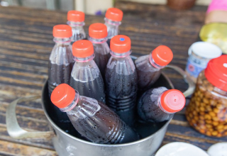
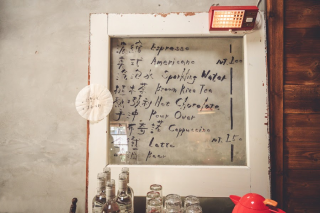
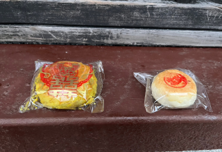
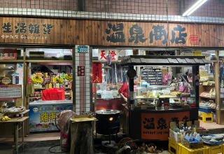

電話：0933-929-158
地址：新北市瑞芳區民生街25號
營業時間:08:30–15:00(週四公休)
食物介紹:龍鳳腿售價12元，所謂
的龍鳳腿餡料就是用了魚漿、豬
腿肉、高麗菜、洋蔥、紅蘿蔔等
等，然後用豬油網包起來下去油
炸，龍鳳腿現炸現吃有夠好吃，
表皮微微酥脆，一口咬下肉餡飽
滿，還有蔬菜的甜美又多汁。
阿霞龍鳳腿
電話：0920-312-468
地址：新北市瑞芳區民生街35巷
2號(8號攤位)
營業時間:08:00–20:00
食物介紹:招牌菜色是肉羹跟魷魚
可以搭配各種麵、飯、米粉、冬
粉、粄條等。肉羹湯上有滿滿的
香菜，大骨湯頭加上淡淡的勾芡
不會膩口黑醋與沙茶、油蔥的調
味恰到好處，豬肉塊加上魚漿做
出來的肉羹，吃得到完整豬肉。
豐味肉羹
電話：02-2497-4268
地址：新北市瑞芳區瑞芳街8號
營業時間:10:00–21:00
食物介紹:菜單除了甜點之外，還
有菜頭滷，兩人以上也可以點套
餐，非常划算。而芋圓的創始者
就是保雲阿罵，也難怪他們的芋
園那麼好吃，推薦保雲芋園的豆
花和嫩仙草，非常的順口、滑
嫩，夏天來一碗非常的消暑。
保雲芋圓
電話：02-2496-0688
地址：新北市瑞芳區柴寮路68號
營業時間:10:00–17:00
食物介紹:主餐部分超推薦好吃的
豬油拌飯，搭配鯊魚煙或是嘴邊
肉，最後搭配個清湯，一家三口
一餐下來兩百元有找，真的CP值
超高又超級飽足的，在六八小吃
裡不時會有貓咪進來串門子。
68小吃店
電話：02-2497-2840
地址：新北市瑞芳區柴寮路46號
營業時間:尚無營間時間資訊
食物介紹:容環有味 雪花冰裡面賣
了各式的冰品，天氣熱來一碗剉
冰或雪花冰，真的最是時候了，
裡面有賣豆花、芒果冰、剉冰、
雪花冰、飲料，還有涼麵、味噌
湯，不僅有冰品也有主食。
容環有味 雪花冰
電話：尚無電話資訊
地址：猴硐貓村
營業時間:12:00–18:30(星期三、四公休)
食物介紹:簡單的擺設純白的牆
面，點杯咖啡，這裡的拉花稱得
上是最有貓村風格的，細細品嘗
咖啡的香氣在嘴裡瀰漫，靜靜欣
賞人來人往和火車，享有愜意的
下午。
MEOW MEOW 喵喵
電話：0988-374-335
地址：新北市瑞芳區魚寮路154號
營業時間:星期六日10:00–19:00
食物介紹:菜單品項並不多，有肉
羹湯、肉羹飯、肉羹麵、肉羹米
粉、滷肉飯等等基本的主食，都是
親民的銅板價格，另外還有鮮炒雙
菇、蒜泥白肉、五味中卷、菜脯蛋
等等；菜脯蛋和一碗滷肉飯，宛如
必點組合。
阿珠姐肉羹

電話：0935-391-915
地址：新北市瑞芳區魚寮路152號
營業時間:星期六日08:30–18:00
食物介紹:主要販售艾草草仔粿跟
芋頭草仔粿兩款，有紅豆、綠豆、
蘿蔔絲口味，一個25元，飲料有
關西仙草茶、火龍果石花凍，另外
有香椿素水餃、素麵線、醃蘿蔔…
等。
文瓊小築
電話：0935-457-619
地址：新北市瑞芳區魚寮路166號
營業時間:星期六日10:00–17:00
食物介紹:可愛胖卡加上大大遮陽
傘、咖啡機、壁畫、浮球、滿滿的
植栽，食物有烤土司、鬆餅、鍋燒
麵，而飲料有咖啡、各式茶飲，甚
至有賣八寶冰。還可以跟本店家的
黑柴-小霸王互動!
小霸王的家

電話：尚無電話資訊
地址：新北市平溪區六分13號
營業時間:12:00–18:00(星期四、五公休)
食物介紹:飲料類有義式咖啡、手
沖咖啡、氣泡水、茶飲、熱巧克
力，要再放鬆一點也有啤酒這個
微醺選項。 甜點有布朗尼、奶酪
、提拉 米蘇、起司蛋糕和唯一的
鹹食起司蛋三明治，價格落在100
到150元間，算是很平價的價格。
與路 Yu Lu Café
電話：尚無電話資訊
地址：新北市平溪區十分街226號
營業時間:尚無營業時間資訊
食物介紹:烤的顏色金黃，刷上醬
料後陣陣香氣撲鼻而來，還會撒上
調味料及芝麻，賣相很誘人！
雞翅裏頭塞入調味過的米飯，非常
好吃，雞翅也處理得非常好，外皮
烤的微焦，雞肉也很嫩口！真的是
來到十分必買必吃的啊！
傳啵妹
電話：0986-396-789
地址：新北市平溪區十分街69號
營業時間:平日12:00–17:00
假日11:00–18:00
食物介紹:銅板價的美食，讓你在
逛街時順道消消暑氣，這裡採用
的是宜蘭正宗的花生糖，用現刨
的方式，將花生粉刨下，接著放
上古早味的冰淇淋，有兩種口
味，接著灑上香菜，讓人口水直
流。
十分幸福 花生捲冰淇淋
電話：0987-504-561
地址：新北市平溪區十分街154號
營業時間:平日10:00–19:00
假日09:00–21:30
食物介紹:自製黒豬肉香腸，新鮮
又味美多汁，吃後ロ齒留香，會讓
你一ロ接一ロ，還附贈大蒜解油膩
，非常好吃，好有滿足感。老闆娘
服務親切，待人熱忱。
十分黑豬肉香腸
電話：0938-957-211
地址：新北市平溪區望古坑橋26 之 1 號
營業時間:11:00–19:00
食物介紹:望古棧平日不營業，客
人電話預約後，主人才會過來開
門，提供活動空間與午餐。棧裏
常有團體舉辦活動，例如賞螢、
繪畫、看瀑布、走步道、研究植
物栽培……，雖說有時是上課，
但整體氣氛悠閑自在。
人性空間 - 望古棧
電話：0966-615-009
地址：新北市平溪區中山高速公路116號嶺腳寮
營業時間:星期五六10:00–19:00
星期日10:30–19:00
食物介紹:隱藏在小車站裡的美味
小吃店，主打「野薑花料理」，
老闆推薦的野薑花水餃，入口時
會有淡淡的野薑花味，不用沾醬
更能顯現香氣，還有各式熱炒，
都做得很用心。
嶺腳小吃
電話：尚無電話資訊
地址：新北市平溪區7號
營業時間:12:00–18:00(星期三、四公休)
食物介紹:店內裝飾擺設使用大量
木材元素，有著自然而溫馨之感，
菜單如下:義式咖啡有濃縮、美
式、拿鐵、卡布簡單四種，另外搭
配手沖咖啡、啤酒、熱可可，和布
丁、乳酪蛋糕、磅蛋糕三種甜點。
羊水
電話：02-2495-2796
地址：新北市平溪區嶺腳寮19號
營業時間:10:00–18:00
食物介紹:由蔡金木與李素真夫婦
兩人經營，主要有藍染、植物染
DIY、香草飲品、台灣真咖啡、
天然健康有機素食餐、全手工麥
包子、饅頭、西點、麵包。沒有
光鮮的外觀，看起來很不起眼，
不過懂門道的人都知道來這裡買
饅頭。
大路車文史工作室
電話：02-2495-2032
地址：新北市平溪區平溪街18號
營業時間:08:30–15:00(週四公休)
食物介紹:鐵道熱腸每次都一堆人
排隊，大腸包小腸的香腸是碳烤
的，糯米腸是用炸的，香氣濃郁，
香腸也是蠻好吃的，因為加了很多
大蒜、香菜，非常夠味!大腸包小
腸口味很多，還有綜合的五味口
味，除此之外還有賣雞排。
鐵道熱腸
電話：尚無電話資訊
地址：新北市平溪區平溪街35號
營業時間:星期一二11:00–19:15
星期五六日10:30–20:00(星期三
、四公休)
食物介紹:平溪古早味麵茶主要販
賣麵茶以及杏仁茶，可以搭配椪
餅以及油條，很妙的還有椪餅加
太白粉，另外還有賣雞絲麵；環
境跟味道都挺古早味的，聞到味
道就想到學生時代呀!
平溪古早味麵茶

電話：02-2495-1084
地址：新北市平溪區平溪街11號
營業時間:07:00–19:00
食物介紹:開業超過50年的平溪古
早味餅店，店內有多種看了就垂
涎三尺的傳統糕點，綠豆椪、椪
餅、咖哩肉餅、鳳梨喜餅等，保
留了古早的單純美味，讓人吃了
之後回味無窮，是來平溪玩最好
的伴手禮。
平溪古早味餅店
電話：02-2495-1056
地址：新北市平溪區菁桐街127號
營業時間:09:15–17:15(週四公休)
食物介紹:楊家雞捲是菁桐歷史最
悠久的一家雞捲，雞捲包含豆皮、
芋頭、洋蔥、豬絞肉與特製麵粉、
上選調味料等(沒有雞肉)，手工製
作的，味道不錯。店家還有賣卜
肉，現炸的卜肉外層有裹麵粉，吃
起來甜甜的，沾著番茄醬很好吃。
楊家雞捲
電話：0963-579-133
地址：新北市平溪區菁桐街163號
營業時間:星期六日11:00–19:00
食物介紹:這裡的蔥餅聞起來有淡
淡的香氣，口感非常的酥脆而且
層次感十足完全不會油膩，吃起
來清爽無負擔，另外愛玉是這邊
的招牌飲料，非常的好喝，要是
有來菁桐老街一定要來這家吃看
看！
郭家手工蔥餅


電話：02-2495-1066
地址：新北市平溪區菁桐街165號
營業時間:07:30–22:00
食物介紹:溫泉商店本身是一間雜
貨店，賣一些南北雜貨，門口擺
了一個小餐車，賣一些熱食，雞
柳條吃起來還有一絲一絲的纖
維，雞肉肉汁都有鎖在裡面，很
濕潤，而且外皮的裹粉沒有很
厚，吃起來相當美味！
温泉商店